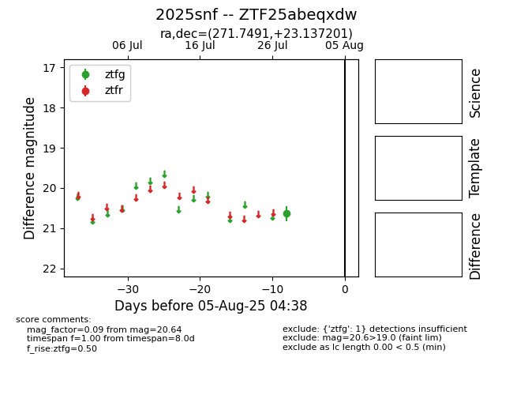

Target 2025snf at 2025-08-05 04:38, see:
FINK: fink-portal.org/2025snf
Lasair: lasair-ztf.lsst.ac.uk/objects/2025snf
ALeRCE: alerce.online/object/2025snf
TNS: wis-tns.org/object/2025snf
YSE: ziggy.ucolick.org/yse/transient_detail/2025snf
alt names
ZTF25abeqxdw (ztf,fink)
2025snf (tns,yse)
coordinates:
equatorial (ra, dec) = (271.7491,+23.13720)
galactic (l, b) = (49.5267,+19.68673)
photometry
last ztfg=20.64
1 ztfg detections
